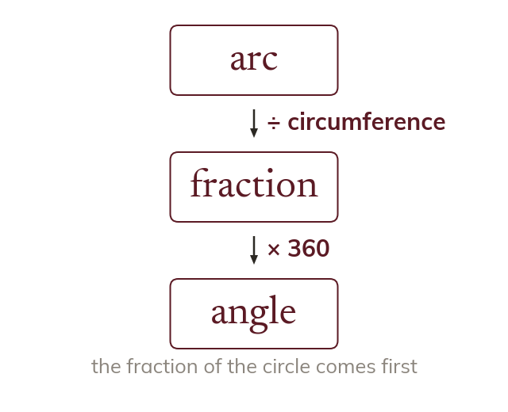

The formula is an equation
The sector formulas link the angle, the radius and the length or area. Knowing two fixes the third.
The arc-length formula links three quantities: the angle, the radius and the arc. Knowing any two fixes the third, so the formula is set equal to what is given and solved like any equation.